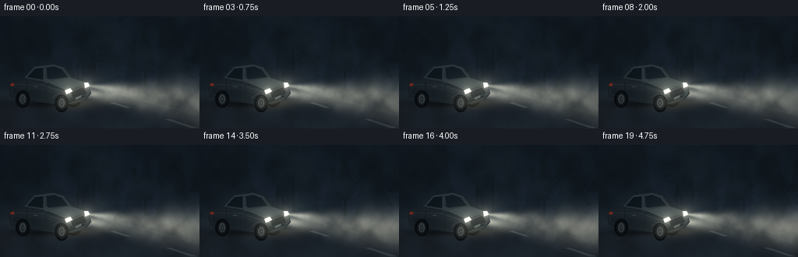
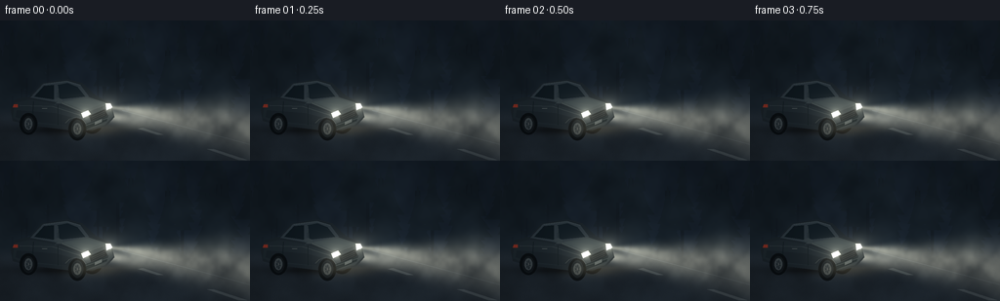

CODING AGENTS AS PIXEL WORLD MODELS
traex/GPT-6.1-Sol · phygen_051
点击播放 · 原生 RGB 像素
逐轮保存的候选
回放视频、检查图与代码变化。
每份候选均可单独播放。实际图片检查记录在下方工具轨迹中。
候选 01播放与检查图
点击播放 · 原生 RGB 像素


展开代码变化
--- 上一保存版本
+++ 本次保存版本
@@ -0,0 +1,182 @@
+from pathlib import Path
+import json
+import numpy as np
+from PIL import Image, ImageDraw, ImageFilter
+import artifact_io
+
+ROOT = Path(__file__).resolve().parent
+SPEC = json.loads((ROOT/'task_spec.json').read_text())
+W,H = SPEC['width'],SPEC['height']
+S=3
+w,h=W*S,H*S
+Y,X=np.mgrid[0:h,0:w].astype(np.float32)/S
+rng=np.random.default_rng(51)
+
+# Continuous, drifting, multi-scale mist, without independently redrawing frames.
+def noise_field(cell, seed):
+ r=np.random.default_rng(seed)
+ a=r.random((int(h/cell)+4,int(w/cell)+4)).astype(np.float32)
+ im=Image.fromarray(a,mode='F').resize((w+180,h+180),Image.Resampling.BICUBIC)
+ return np.asarray(im)
+noise=[noise_field(c,70+i) for i,c in enumerate([100,48,22,9])]
+def drifting(t):
+ out=np.zeros((h,w),np.float32)
+ for i,(a,weight) in enumerate(zip(noise,[.47,.29,.17,.07])):
+ dx=45+t*(3.6+i*.85)*S
+ dy=55-t*(.6+i*.12)*S
+ ix,iy=int(dx),int(dy); fx,fy=dx-ix,dy-iy
+ z=(a[iy:iy+h,ix:ix+w]*(1-fx)+a[iy:iy+h,ix+1:ix+w+1]*fx)*(1-fy)
+ z+=(a[iy+1:iy+h+1,ix:ix+w]*(1-fx)+a[iy+1:iy+h+1,ix+1:ix+w+1]*fx)*fy
+ out+=weight*z
+ return out
+
+# A subdued woodland roadside, mostly lost in the atmospheric veil.
+base=np.zeros((h,w,3),np.float32)
+vertical=np.clip(Y/144,0,1)
+base[:]=np.stack([9+5*vertical,15+6*vertical,22+7*vertical],axis=-1)
+bg=Image.new('RGB',(w,h),(0,0,0)); d=ImageDraw.Draw(bg)
+def poly(draw, points, fill): draw.polygon([(round(x*S),round(y*S)) for x,y in points],fill=fill)
+def line(draw,points,fill,width=1): draw.line([(round(x*S),round(y*S)) for x,y in points],fill=fill,width=max(1,round(width*S)))
+for i in range(36):
+ x=rng.uniform(-15,275); top=rng.uniform(-25,40); bottom=rng.uniform(80,105); ww=rng.uniform(1,3)
+ poly(d,[(x-ww,top),(x+ww,top),(x+ww*.5,bottom),(x-ww*.5,bottom)],(8,13,18))
+ for j in range(7):
+ yy=top+8+j*8; spread=rng.uniform(8,18)*(j/8+.35)
+ poly(d,[(x,yy-13),(x-spread,yy+9),(x+spread,yy+9)],(9,15,20))
+forest=np.asarray(bg).astype(np.float32)
+forestmask=(forest.sum(axis=2)>0)
+base[forestmask]=forest[forestmask]
+# Road plane and an understated gravel verge.
+road=np.clip((Y-89)/10,0,1)
+base=base*(1-road[:,:,None])+np.array([17,22,27])*road[:,:,None]
+road_noise=np.random.default_rng(100).normal(0,.75,(h,w)).astype(np.float32)
+base+=road_noise[:,:,None]*road[:,:,None]
+# Perspective road edge and pale broken center markings, obscured by haze.
+mark=Image.new('RGB',(w,h)); md=ImageDraw.Draw(mark)
+line(md,[(125,92),(256,127)],(30,35,37),.8)
+poly(md,[(141,111),(160,117),(167,117),(146,110)],(53,55,51))
+poly(md,[(212,132),(244,143),(253,143),(219,132)],(47,49,47))
+base+=np.asarray(mark)*.45
+
+# Custom shaded car: three-quarter front, parked on a wet road.
+car=Image.new('RGBA',(w,h)); cd=ImageDraw.Draw(car)
+def cp(points,colour): poly(cd,points,colour)
+def cl(points,colour,width=1): line(cd,points,colour,width)
+def ellipse(box,fill,outline=None,width=1):
+ cd.ellipse(tuple(round(v*S) for v in box),fill=fill,outline=outline,width=max(1,round(width*S)))
+# Ground shadow.
+shadow=np.exp(-((X-66)/46)**2-((Y-112)/5)**2)*.55
+# Far wheel, then sculpted body.
+ellipse((83,92,105,116),(5,8,11,255))
+ellipse((85,94,102,113),(15,20,23,255))
+ellipse((91,99,99,110),(33,40,43,255))
+cp([(11,92),(15,81),(30,78),(43,64),(69,60),(84,64),(98,77),(113,84),(117,99),(108,109),(83,114),(27,107),(13,103)],(22,30,36,255))
+# Roof, side glass, front windshield.
+cp([(31,79),(44,65),(69,62),(82,66),(91,78),(59,84)],(38,48,55,255))
+cp([(35,78),(45,67),(55,66),(55,81)],(11,20,26,255))
+cp([(59,66),(69,64),(79,68),(87,78),(59,81)],(14,24,31,255))
+cl([(45,65),(68,62),(82,66)],(65,76,81,255),.6)
+cl([(59,67),(60,81)],(39,49,54,255),1)
+# Hood with several softly lit panels.
+cp([(60,84),(89,78),(110,85),(89,96)],(45,55,59,255))
+cp([(65,84),(89,80),(105,85),(87,92)],(48,59,63,255))
+cl([(62,84),(88,95),(111,85)],(66,76,76,255),.5)
+cl([(73,84),(94,87)],(53,63,65,255),.6)
+# Broad side plane.
+cp([(15,84),(32,81),(58,86),(85,96),(85,109),(25,105),(13,100)],(25,34,40,255))
+cp([(17,92),(57,95),(83,102),(80,109),(27,103),(16,99)],(21,29,35,255))
+cl([(20,87),(54,88),(82,97)],(52,62,65,255),.65)
+cl([(34,83),(33,100)],(13,22,27,255),.55)
+cl([(59,87),(59,107)],(13,22,27,255),.65)
+cl([(43,90),(48,90)],(71,79,80,255),.7)
+# Front fascia, black grille, lower lip.
+cp([(85,96),(112,85),(116,98),(107,107),(84,113)],(33,42,47,255))
+cp([(91,98),(107,91),(110,97),(94,105)],(6,12,17,255))
+for offset in [0,2,4]: cl([(94,99+offset),(107,93+offset)],(43,50,52,255),.45)
+cp([(85,107),(111,97),(109,103),(85,113)],(13,22,27,255))
+cl([(86,108),(110,100)],(54,64,66,255),.75)
+cp([(97,104),(104,101),(104,104),(97,107)],(69,78,79,255))
+# Near wheels and arches.
+ellipse((20,95,38,117),(6,10,13,255))
+ellipse((23,98,35,115),(14,19,23,255))
+ellipse((25,100,33,112),(51,59,63,255))
+ellipse((27,102,31,111),(23,31,37,255))
+for ang in np.linspace(0,2*np.pi,7,endpoint=False):
+ cl([(29,106),(29+3*np.cos(ang),106+5*np.sin(ang))],(75,80,82,255),.4)
+ellipse((70,100,88,123),(5,9,12,255))
+ellipse((73,102,85,120),(16,22,26,255))
+ellipse((75,105,83,117),(53,60,62,255))
+ellipse((77,107,81,115),(24,32,38,255))
+for ang in np.linspace(0,2*np.pi,7,endpoint=False):
+ cl([(79,111),(79+3*np.cos(ang),111+5*np.sin(ang))],(79,83,82,255),.45)
+cl([(67,105),(71,101),(77,99),(84,101),(88,106)],(47,55,57,255),.7)
+# Mirror and subdued red rear running light.
+cp([(55,81),(59,79),(64,81),(63,85),(58,85)],(43,53,58,255))
+cl([(58,83),(56,87)],(31,42,48,255),1)
+cp([(14,86),(18,86),(18,89),(13,89)],(123,41,30,255))
+# The headlights themselves will be emissive in the lighting stage.
+cp([(83,95),(90,92),(93,96),(85,100)],(178,187,177,255))
+cp([(108,85),(113,85),(115,89),(109,92)],(181,190,184,255))
+car_a=np.asarray(car).astype(np.float32)/255
+
+# Beam volume projected into camera; extinction along its length and soft cone edges.
+lights=[(87.5,96.4,.095,1.0),(111.5,88.8,.11,.90)]
+beams=[]
+for lx,ly,slope,strength in lights:
+ distance=X-lx
+ radius=1.3+np.maximum(distance,0)*.185
+ cross=(Y-ly-slope*distance)/radius
+ cone=np.exp(-1.7*cross**2)/(1+np.exp(np.clip((np.abs(cross)-1.5)*9,-60,60)))
+ longitudinal=np.exp(-np.maximum(distance,0)/170)*(1-np.exp(-np.maximum(distance,0)/5))
+ gate=np.clip(distance/2,0,1)
+ beams.append(strength*cone*longitudinal*gate)
+beam=sum(beams)
+
+frames=[]
+for f in range(SPEC['frames']):
+ t=f/SPEC['fps']
+ fog=drifting(t)
+ density=np.clip(.48+1.6*fog,0,2)
+ # Dark blue ambient fog sets depth, including a rolling bank at road level.
+ bank=np.exp(-((Y-(87+4*np.sin(X/76+t*.18)))/22)**2)
+ atmospheric=(8+20*fog+9*bank)
+ col=base+atmospheric[:,:,None]*np.array([.57,.72,.85])
+ col*=1-shadow[:,:,None]
+ col=col*(1-car_a[:,:,3:])+car_a[:,:,:3]*255*car_a[:,:,3:]
+ # Vehicle visible through a thin foreground veil.
+ veil=(.018+.032*fog)*car_a[:,:,3]
+ col=col*(1-veil[:,:,None])+np.array([80,92,100])*veil[:,:,None]
+ # Scattered warm-white photons reveal the flowing fog's mottled structure.
+ modulation=np.clip(.40+1.12*fog+.12*np.sin(X/22+Y/17-t*.65),.25,1.5)
+ scatter=beam*modulation*108
+ # Keep the solid car opaque to its own beams.
+ scatter*=1-car_a[:,:,3]*.98
+ col+=scatter[:,:,None]*np.array([1.0,.95,.80])
+ # Weak wide-angle halo: multiple scattering in the thick mist.
+ halo=np.asarray(Image.fromarray((np.clip(beam,0,2)*75).astype(np.float32),mode='F').filter(ImageFilter.GaussianBlur(6*S))) if False else None
+ wide=np.zeros((h,w),np.float32)
+ for lx,ly,_,power in lights:
+ rr=((X-lx)/23)**2+((Y-ly)/15)**2
+ wide+=power*25*np.exp(-rr*.7)
+ col+=wide[:,:,None]*np.array([1,.94,.78])
+ # Wet tarmac picks up smeared headlamp reflections rather than mirror images.
+ refl=np.zeros((h,w),np.float32)
+ for lx,ly,_,power in lights:
+ ground_y=113 if lx<100 else 108
+ refl+=power*21*np.exp(-((X-lx-12)/28)**2-((Y-ground_y)/6)**2)
+ refl*=np.clip((Y-100)/10,0,1)*(.65+.65*fog)
+ col+=refl[:,:,None]*np.array([1,.88,.61])
+ # Smooth bloom plus brilliant physically fixed sources.
+ for lx,ly,_,power in lights:
+ r2=(X-lx)**2+(Y-ly)**2
+ bloom=power*(80*np.exp(-r2/16)+33*np.exp(-r2/94))
+ col+=bloom[:,:,None]*np.array([1,.97,.83])
+ core=np.exp(-((X-lx)/2.4)**4-((Y-ly)/1.55)**4)*225
+ col+=core[:,:,None]*np.array([1,1,.96])
+ # A slight photographic vignette and restrained soft film response.
+ vignette=1-.20*((X-137)/170)**2-.14*((Y-78)/105)**2
+ col*=vignette[:,:,None]
+ col=np.clip(col,0,255)
+ im=Image.fromarray(col.astype(np.uint8),'RGB').resize((W,H),Image.Resampling.LANCZOS)
+ frames.append(np.asarray(im))
+artifact_io.save(np.stack(frames),ROOT)
可观测工具轨迹
实际执行的命令与返回图片。
命令 1exit 0
/bin/bash -lc 'ls -la && cat prompt.txt && cat GENERATION_RULES.md && cat task_spec.json'
命令 2exit 0
/bin/bash -lc 'cat artifact_io.py'
命令 3exit 0
/bin/bash -lc "cat > generate.py <<'PY'
from pathlib import Path
import json
import numpy as np
from PIL import Image, ImageDraw, ImageFilter
import artifact_io
ROOT = Path(__file__).resolve().parent
SPEC = json.loads((ROOT/'task_spec.json').read_text())
W,H = SPEC['width'],SPEC['height']
S=3
w,h=W*S,H*S
Y,X=np.mgrid[0:h,0:w].astype(np.float32)/S
rng=np.random.default_rng(51)
# Continuous, drifting, multi-scale mist, without independently redrawing frames.
def noise_field(cell, seed):
r=np.random.default_rng(seed)
a=r.random((int(h/cell)+4,int(w/cell)+4)).astype(np.float32)
im=Image.fromarray(a,mode='F').resize((w+180,h+180),Image.Resampling.BICUBIC)
return np.asarray(im)
noise=[noise_field(c,70+i) for i,c in enumerate([100,48,22,9])]
def drifting(t):
out=np.zeros((h,w),np.float32)
for i,(a,weight) in enumerate(zip(noise,[.47,.29,.17,.07])):
dx=45+t*(3.6+i*.85)*S
dy=55-t*(.6+i*.12)*S
ix,iy=int(dx),int(dy); fx,fy=dx-ix,dy-iy
z=(a[iy:iy+h,ix:ix+w]*(1-fx)+a[iy:iy+h,ix+1:ix+w+1]*fx)*(1-fy)
z+=(a[iy+1:iy+h+1,ix:ix+w]*(1-fx)+a[iy+1:iy+h+1,ix+1:ix+w+1]*fx)*fy
out+=weight*z
return out
# A subdued woodland roadside, mostly lost in the atmospheric veil.
base=np.zeros((h,w,3),np.float32)
vertical=np.clip(Y/144,0,1)
base[:]=np.stack([9+5*vertical,15+6*vertical,22+7*vertical],axis=-1)
bg=Image.new('RGB',(w,h),(0,0,0)); d=ImageDraw.Draw(bg)
def poly(draw, points, fill): draw.polygon([(round(x*S),round(y*S)) for x,y in points],fill=fill)
def line(draw,points,fill,width=1): draw.line([(round(x*S),round(y*S)) for x,y in points],fill=fill,width=max(1,round(width*S)))
for i in range(36):
x=rng.uniform(-15,275); top=rng.uniform(-25,40); bottom=rng.uniform(80,105); ww=rng.uniform(1,3)
poly(d,[(x-ww,top),(x+ww,top),(x+ww*.5,bottom),(x-ww*.5,bottom)],(8,13,18))
for j in range(7):
yy=top+8+j*8; spread=rng.uniform(8,18)*(j/8+.35)
poly(d,[(x,yy-13),(x-spread,yy+9),(x+spread,yy+9)],(9,15,20))
forest=np.asarray(bg).astype(np.float32)
forestmask=(forest.sum(axis=2)>0)
base[forestmask]=forest[forestmask]
# Road plane and an understated gravel verge.
road=np.clip((Y-89)/10,0,1)
base=base*(1-road[:,:,None])+np.array([17,22,27])*road[:,:,None]
road_noise=np.random.default_rng(100).normal(0,.75,(h,w)).astype(np.float32)
base+=road_noise[:,:,None]*road[:,:,None]
# Perspective road edge and pale broken center markings, obscured by haze.
mark=Image.new('RGB',(w,h)); md=ImageDraw.Draw(mark)
line(md,[(125,92),(256,127)],(30,35,37),.8)
poly(md,[(141,111),(160,117),(167,117),(146,110)],(53,55,51))
poly(md,[(212,132),(244,143),(253,143),(219,132)],(47,49,47))
base+=np.asarray(mark)*.45
# Custom shaded car: three-quarter front, parked on a wet road.
car=Image.new('RGBA',(w,h)); cd=ImageDraw.Draw(car)
def cp(points,colour): poly(cd,points,colour)
def cl(points,colour,width=1): line(cd,points,colour,width)
def ellipse(box,fill,outline=None,width=1):
cd.ellipse(tuple(round(v*S) for v in box),fill=fill,outline=outline,width=max(1,round(width*S)))
# Ground shadow.
shadow=np.exp(-((X-66)/46)**2-((Y-112)/5)**2)*.55
# Far wheel, then sculpted body.
ellipse((83,92,105,116),(5,8,11,255))
ellipse((85,94,102,113),(15,20,23,255))
ellipse((91,99,99,110),(33,40,43,255))
cp([(11,92),(15,81),(30,78),(43,64),(69,60),(84,64),(98,77),(113,84),(117,99),(108,109),(83,114),(27,107),(13,103)],(22,30,36,255))
# Roof, side glass, front windshield.
cp([(31,79),(44,65),(69,62),(82,66),(91,78),(59,84)],(38,48,55,255))
cp([(35,78),(45,67),(55,66),(55,81)],(11,20,26,255))
cp([(59,66),(69,64),(79,68),(87,78),(59,81)],(14,24,31,255))
cl([(45,65),(68,62),(82,66)],(65,76,81,255),.6)
cl([(59,67),(60,81)],(39,49,54,255),1)
# Hood with several softly lit panels.
cp([(60,84),(89,78),(110,85),(89,96)],(45,55,59,255))
cp([(65,84),(89,80),(105,85),(87,92)],(48,59,63,255))
cl([(62,84),(88,95),(111,85)],(66,76,76,255),.5)
cl([(73,84),(94,87)],(53,63,65,255),.6)
# Broad side plane.
cp([(15,84),(32,81),(58,86),(85,96),(85,109),(25,105),(13,100)],(25,34,40,255))
cp([(17,92),(57,95),(83,102),(80,109),(27,103),(16,99)],(21,29,35,255))
cl([(20,87),(54,88),(82,97)],(52,62,65,255),.65)
cl([(34,83),(33,100)],(13,22,27,255),.55)
cl([(59,87),(59,107)],(13,22,27,255),.65)
cl([(43,90),(48,90)],(71,79,80,255),.7)
# Front fascia, black grille, lower lip.
cp([(85,96),(112,85),(116,98),(107,107),(84,113)],(33,42,47,255))
cp([(91,98),(107,91),(110,97),(94,105)],(6,12,17,255))
for offset in [0,2,4]: cl([(94,99+offset),(107,93+offset)],(43,50,52,255),.45)
cp([(85,107),(111,97),(109,103),(85,113)],(13,22,27,255))
cl([(86,108),(110,100)],(54,64,66,255),.75)
cp([(97,104),(104,101),(104,104),(97,107)],(69,78,79,255))
# Near wheels and arches.
ellipse((20,95,38,117),(6,10,13,255))
ellipse((23,98,35,115),(14,19,23,255))
ellipse((25,100,33,112),(51,59,63,255))
ellipse((27,102,31,111),(23,31,37,255))
for ang in np.linspace(0,2*np.pi,7,endpoint=False):
cl([(29,106),(29+3*np.cos(ang),106+5*np.sin(ang))],(75,80,82,255),.4)
ellipse((70,100,88,123),(5,9,12,255))
ellipse((73,102,85,120),(16,22,26,255))
ellipse((75,105,83,117),(53,60,62,255))
ellipse((77,107,81,115),(24,32,38,255))
for ang in np.linspace(0,2*np.pi,7,endpoint=False):
cl([(79,111),(79+3*np.cos(ang),111+5*np.sin(ang))],(79,83,82,255),.45)
cl([(67,105),(71,101),(77,99),(84,101),(88,106)],(47,55,57,255),.7)
# Mirror and subdued red rear running light.
cp([(55,81),(59,79),(64,81),(63,85),(58,85)],(43,53,58,255))
cl([(58,83),(56,87)],(31,42,48,255),1)
cp([(14,86),(18,86),(18,89),(13,89)],(123,41,30,255))
# The headlights themselves will be emissive in the lighting stage.
cp([(83,95),(90,92),(93,96),(85,100)],(178,187,177,255))
cp([(108,85),(113,85),(115,89),(109,92)],(181,190,184,255))
car_a=np.asarray(car).astype(np.float32)/255
# Beam volume projected into camera; extinction along its length and soft cone edges.
lights=[(87.5,96.4,.095,1.0),(111.5,88.8,.11,.90)]
beams=[]
for lx,ly,slope,strength in lights:
distance=X-lx
radius=1.3+np.maximum(distance,0)*.185
cross=(Y-ly-slope*distance)/radius
cone=np.exp(-1.7*cross**2)/(1+np.exp(np.clip((np.abs(cross)-1.5)*9,-60,60)))
longitudinal=np.exp(-np.maximum(distance,0)/170)*(1-np.exp(-np.maximum(distance,0)/5))
gate=np.clip(distance/2,0,1)
beams.append(strength*cone*longitudinal*gate)
beam=sum(beams)
frames=[]
for f in range(SPEC['frames']):
t=f/SPEC['fps']
fog=drifting(t)
density=np.clip(.48+1.6*fog,0,2)
# Dark blue ambient fog sets depth, including a rolling bank at road level.
bank=np.exp(-((Y-(87+4*np.sin(X/76+t*.18)))/22)**2)
atmospheric=(8+20*fog+9*bank)
col=base+atmospheric[:,:,None]*np.array([.57,.72,.85])
col*=1-shadow[:,:,None]
col=col*(1-car_a[:,:,3:])+car_a[:,:,:3]*255*car_a[:,:,3:]
# Vehicle visible through a thin foreground veil.
veil=(.018+.032*fog)*car_a[:,:,3]
col=col*(1-veil[:,:,None])+np.array([80,92,100])*veil[:,:,None]
# Scattered warm-white photons reveal the flowing fog's mottled structure.
modulation=np.clip(.40+1.12*fog+.12*np.sin(X/22+Y/17-t*.65),.25,1.5)
scatter=beam*modulation*108
# Keep the solid car opaque to its own beams.
scatter*=1-car_a[:,:,3]*.98
col+=scatter[:,:,None]*np.array([1.0,.95,.80])
# Weak wide-angle halo: multiple scattering in the thick mist.
halo=np.asarray(Image.fromarray((np.clip(beam,0,2)*75).astype(np.float32),mode='F').filter(ImageFilter.GaussianBlur(6*S))) if False else None
wide=np.zeros((h,w),np.float32)
for lx,ly,_,power in lights:
rr=((X-lx)/23)**2+((Y-ly)/15)**2
wide+=power*25*np.exp(-rr*.7)
col+=wide[:,:,None]*np.array([1,.94,.78])
# Wet tarmac picks up smeared headlamp reflections rather than mirror images.
refl=np.zeros((h,w),np.float32)
for lx,ly,_,power in lights:
ground_y=113 if lx<100 else 108
refl+=power*21*np.exp(-((X-lx-12)/28)**2-((Y-ground_y)/6)**2)
refl*=np.clip((Y-100)/10,0,1)*(.65+.65*fog)
col+=refl[:,:,None]*np.array([1,.88,.61])
# Smooth bloom plus brilliant physically fixed sources.
for lx,ly,_,power in lights:
r2=(X-lx)**2+(Y-ly)**2
bloom=power*(80*np.exp(-r2/16)+33*np.exp(-r2/94))
col+=bloom[:,:,None]*np.array([1,.97,.83])
core=np.exp(-((X-lx)/2.4)**4-((Y-ly)/1.55)**4)*225
col+=core[:,:,None]*np.array([1,1,.96])
# A slight photographic vignette and restrained soft film response.
vignette=1-.20*((X-137)/170)**2-.14*((Y-78)/105)**2
col*=vignette[:,:,None]
col=np.clip(col,0,255)
im=Image.fromarray(col.astype(np.uint8),'RGB').resize((W,H),Image.Resampling.LANCZOS)
frames.append(np.asarray(im))
artifact_io.save(np.stack(frames),ROOT)
PY
python generate.py"命令 4exit 1
/bin/bash -lc 'command -v ffmpeg && ffmpeg -hide_banner -loglevel error -y -framerate 4 -i frames/%02d.png -c:v libx264 -pix_fmt yuv420p -r 4 video.mp4 && ls -lh pixels.npz index.html inspection.png video.mp4'
视觉工具实际返回图片 1

保存候选 1 份；完成命令 4 次；可验证图片返回 1 张。原始 API 响应与完整日志保留在本地。